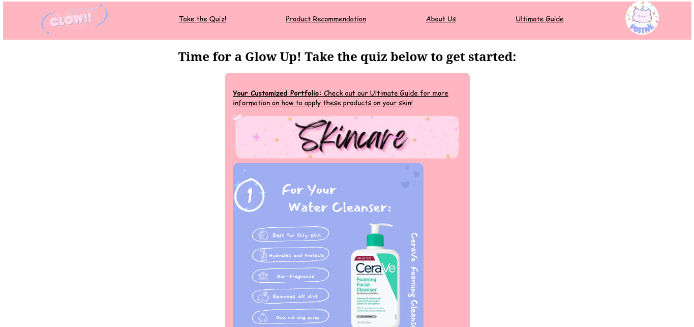

| Project Name | Course Name | Date | Description | Images | Full Project Documentation | Scoring Rubric |
|---|---|---|---|---|---|---|
| Tic-Tac-Toe | Wheel Elective | 2020 | The objective of this project was to create a Tic-Tac-Toe Game using Pygame and Python. I coded this project on my own and was responsible to work on the front-end and back-end of the project. I used the Pygame library to create the game and the Python library to create the front-end. If I had a question, I would work with my father to overcome the technical difficulty. We would do pair programming until the issue was resolved. I learned how to use Pygame and create graphics. Some challenges that I had included creating the game board, creating the X and O, and creating the winning, loosing, and tie conditions. | Not available | Not available | |
| Forever Glow | Computer Science Essentials (CSE) | 2024 | The objective of this project was to create a website that helps empower young women by recommending them products that will help eleveate their appearance and glow up to feel confident and beautiful. This website was created using HTML, CSS, and JavaScript. I worked on this project with two other classmates in my Computer Science Essentials class. I was the main coder and helped with the back-end of the website involving JavaScript. I also dealt a little bit of front-end involving CSS. I learned how to create a user friendly website and learned how to usse variables and if-else statements in JavaScript. Some challenges that I had included creating the quiz. Initially, I wasn't sure how to only allow certain images to appear after the user clicked on the radio option on the quiz. I also had a challenge in the Product Catalog section of the website and wasn't sure how to only allow certain images to appear after the user selects a feature from the dropdown. My team and I worked on different parts of the website and collaborated to create a final project, which was our project. Based on the coding I was doing, I communicated to my team members how the results from the quiz should be created and explained to them how to code the sections of the website. |  |
Forever Glow Electronic Documentation | Scoring Sheet |